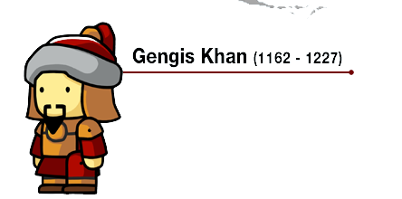

Táticas de guerra
Gengis criou táticas de guerra revolucionárias para as batalhas nas estepes e também é considerado um dos percussores da Guerra humanitária junto com Átila segundo Noam Chomsky.[11] Seu exército era disciplinado, temido e impiedoso. A arma tradicional dos mongóis era o arco mongol, espécie de arco recurvo composto por madeira, cola e chifres de animais, que possibilitava que com a redução de força relativa ao arco longo, os arqueiros conseguissem atirar com mais agilidade e mais precisão. O tamanho relativamente menor em relação ao arco longo, também possibilitava maior portabilidade em cima da montaria, com isso tornou obrigatório o treinamento dessa arma. Os cavaleiros eram treinados para atirar a flecha com o cavalo em movimento. Um detalhe era que, para maior precisão, a flecha era disparada no momento em que o cavalo estivesse em pleno galope. Esses cavaleiros, os chamados mangudais, eram uma arma poderosa contra a infantaria inimiga, já que juntavam dois princípios: arco e flecha e cavalaria, ou seja, um mangudai poderia ser rápido e preciso para atingir os inimigos mesmo estando longe. O arco mongol era até mais potente que os arcos longos utilizados pelos ingleses e galeses com grande êxito em batalhas contra os franceses durante a Guerra dos Cem anos." Gengis Khan